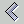
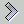
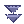

Structure
You can assign other functions to a function in order to subdivide functions. Under the tab Structure the parent functions to which this function belongs or the subordinate functions into which this function is divided are displayed. You can also add or remove parent and child functions here. To do this, click the button . From the free functions, you can use the button

to add a function to the parent or child functions. You can use the button
to remove a selected parent or child function.
Object type
Here you can see the object types assigned to this function for interpretation or processing. To assign or remove object types, click the button . Now select the object types you want to add from the free object types and click the button to add them. To remove object types, select them and click the button .
Organizational unit
Functions are performed in specific organizational units. The organizational units in which this function is performed are displayed here. To add organizational units, click the button . Select the organizational unit you want to add from the right side and click on to add it. To remove organizational units, select them and click the button .
Event Type
Here you can see the event types that are triggered by an activity of this function. To add event types, click the button . Select the event types you want to add from the right side and click on to add them. To remove event types, select them and click the button .
Application Component Configuration
Here you can see the organizational units that will perform this function and the application component configuration that will be used by the corresponding organizational unit to perform this function. To change the application component configurations, click on the button . Select an application component and an application component configuration and click on to add this application component to this application component configuration. To remove an application component from an application component configuration, click on the application component and then on the button .
If you do not want this function to be processed by one of the displayed organizational units anymore, go to the tab Organizational Unit and remove the organizational unit.
Structure
You can subordinate other object types to an object type to subdivide it. Under the tab Structure the superordinate object types to which this object type belongs or the subordinate object types into which this object type is divided are displayed.
You can also add or remove superior and subordinate object types here. To do this, click the button .
From the free object types, you can use the button to add an object type to the superordinate or subordinate object types. You can use the button to remove a selected parent or child object type.
Functions
Here you can see the functions that this object type interprets or processes. To assign or remove functions, click the button . Now select from the free functions those you want to add and click the button to add them. To remove functions, select them and click the button .
Representation form
An object type can have a representation form, which is composed of dataset type, document type and message type. You can see the assigned types under the corresponding tabs. To add a type, click on the button . Then select from the free types those you want to add and click the button to add them. To remove a type, select it and click on the button .
Structure
You can assign other organizational units to an organizational unit to subdivide it. The tab Structure shows the superordinate organizational units to which this organizational unit belongs or the subordinate organizational units into which this organizational unit is divided.
You can also add or remove superordinate and subordinate organizational units here. To do this, click the button . From the free organizational units, you can use the button to add an organizational unit to the higher-level or lower-level organizational units.
You can use the button to remove a selected super- or subordinate organizational unit.
Functions
Here you will find the functions that can be performed by this organizational unit. To assign or remove functions click the button . Now select the functions you want to add and click the button to add them. To remove functions, select them and click the button .
To change the application component configuration with which this organizational unit performs a function, right-click on this function. A context dialog opens where you can select the Properties item to display the properties of the function. Now select the tab Application Component Configuration to change the application component configuration. To do this, proceed as described under Application Component Configuration for the properties dialog of functions.
Structure
You can assign other roles to a role to subdivide it. Under the tab Structure the superordinate roles to which this role belongs or the subordinate roles in which this role is divided are displayed.
You can also add or remove parent and child roles here. To do this, click the button . From the free roles, you can use the button to add a role to the parent or child roles.
You can use the button to remove a selected parent or child role.
Functions
Here you can see the functions that this role performs. To assign or remove functions, click on the button . Now select from the free functions those you want to add and click the button to add them. To remove functions, select them and click on the button .
Structure
A computer-based application component can be subordinated to other computer-based application components to subdivide it. Under the tab Structure the superordinate computer-based application components to which this computer-based application component belongs or the subordinate computer-based application components into which this computer-based application component is divided are displayed.
You can also add or remove higher-level and subordinate computer-based application components here. To do this, click the button . From the free computer-based application components, you can use the button to add a computer-based application component to the higher-level or lower-level computer-based application components.
You can use the button to remove a selected higher-level or lower-level computer-based application component.
Component interface
The component interfaces of this computer-based application component are listed here. To add a new component interface, click on the button

. Now click Add to add a new component interface. If you want to change the properties of the component interface, right-click the component interface. In the context menu, select Properties to change the properties of the component interface as described in Device Interface Properties Dialog.
User Interface
The user interfaces that this computer-based application component has are listed here. To add a new user interface, click the button . Now click Add to add a new user interface. If you want to change the user interface properties, right-click the user interface. On the shortcut menu, select Properties to change the properties of the user interface.
Application Program
The application program associated with this computer-based application component. Each computer-based application component has exactly one application program.The name for this application program is entered automatically, but you can also change the identifier.
Furthermore, a description for this application program can be entered as free text.
Physical data processing component configuration
Here you can see the physical data processing component configurations through which this computer-based application component can be used. To change the physical data processing component configuration, click on the button . Select a physical data processing component and a physical data processing component configuration and click on to add this data processing component to this data processing component configuration.
To remove a data handling component from a data handling component configuration, click on the data handling component and then on the button .
Structure
You can assign other paper-based application components to a paper-based application component in order to subdivide it. Under the tab Structure the superordinate paper-based application components to which this paper-based application component belongs or the subordinate paper-based application components into which this paper-based application component is divided are displayed.
You can also add or remove parent and child paper-based application components here. To do this, click the button . From the free paper-based application components, you can use the button to add a paper-based application component to the parent or child paper-based application components.
You can use the button to remove a selected parent or child paper-based application component.
Component interface
The component interfaces that this paper-based application component has are listed here. To add a new component interface, click the button . Now click Add to add a new component interface. If you want to change the component interface properties, right-click the component interface. In the context menu, select Properties to change the properties of the component interface as described in Device Interface Properties Dialog.
User Interface
This lists the user interfaces that this paper-based application component has. To add a new user interface, click the button . Now click Add to add a new user interface. If you want to change the user interface properties, right-click the user interface. On the shortcut menu, select Properties to change the properties of the user interface.
Organization Plan
Here you can specify the organization plan through which this paper-based application component is implemented. In addition, you can enter a description of this organization plan.
Physical data processing component configuration
Here you can see the physical data processing component configurations through which this paper-based application component can be used. To change the physical data processing component configuration click on the button . Select a physical data processing component and a physical data processing component configuration and click on to add this data processing component to this data processing component configuration.
To remove a data handling component from a data handling component configuration, click on the data handling component and then on the button .
Structure
You can assign other mixed application components to a mixed application component in order to subdivide it. Under the Structure tab, the higher-level Mixed Application Components to which this Mixed Application Component belongs or the lower-level Mixed Application Components into which this Mixed Application Component is divided are displayed.
You can also add or remove higher-level and lower-level Mixed Application Components here. To do this, click the button . You can use the button to add a Mixed Application Component from the free Mixed Application Components to the higher-level or lower-level Mixed Application Components.
Use the button to remove a selected higher-level or lower-level Mixed Application Component.
User Interface
This lists the user interfaces that this mixed application component has. To add a new user interface, click the button . Now click Add to add a new user interface. If you want to change the user interface properties, right-click the user interface. On the shortcut menu, select Properties to change the properties of the user interface.
Application Program
The application program associated with this mixed application component. Each Mixed Application Component has exactly one application program. The name for this application program is entered automatically, but you can also change the identifier.
Furthermore, you can enter a description for this application program as free text.
Organization plan
Here you can specify the organization plan that is used to implement this mixed application component. Additionally, a description of this organization plan can be entered.
Physical data processing component configuration
Here you can see the physical data processing component configurations by which this mixed application component can be used. To change the physical data processing component configuration, click on the button . Select a physical data processing component and a physical data processing component configuration and click on to add this data processing component to this data processing component configuration.
To remove a data handling component from a data handling component configuration, click on the data handling component and then on the button .
Function
A software product supports the processing of a function. Here you can view or change the functions assigned to the software product. To change the assignment of the functions click on the button . From the free functions you can add a function to the supported functions with the help of the button .
With the button you can remove a selected function.
ETNT combination
A communication standard can be connected to several ETNT combinations. Here you can view or change the ETNT combinations connected with the communication standard. To change the assignment of the ETNT combination click on the button .
From the free ETNT combinations, you can add an ETNT combination to the connected ETNT combinations with the help of the button.
With the button you can remove a selected ETNT combination. To change the properties of an ETNT combination, click with the right mouse button on the ETNT combination and select the item Properties from the displayed context menu.
Component interfaces
A communication standard can be used in several component interfaces. Here you can see the component interfaces that use this communication standard. To change the assignment of the component interfaces, click on the button . From the free component interfaces, you can add a component interface to the connected component interfaces using the button .
You can use the button to remove a selected component interface. To change the properties of a component interface, right-click on the component interfaces and select Properties from the context menu that appears.
DBS
A DB administration system can administer several databases, which are used by computer based application modules. Here you can view or change the database systems managed by this DB administration system. To change the assignment of the database systems click on the button . From the free database systems, you can use the button to add a database system to the managed database systems.
With the button you can remove a selected database system. To change the properties of a database system, right-click on the database system and select Properties from the context menu that appears.
Aufgabe
Task An event type can be triggered by one or more tasks. Here you can view or change the tasks that trigger this event type. To change the assignment of the tasks click on the button . From the free tasks, you can use the button to add a task to the associated tasks.
Use the button to remove a selected task. To change the properties of a task, right-click on the task and select Properties from the context menu that appears.
ETNT combination
An event type can be linked to a message type via one or more ETNT combinations. You can view or change the ETNT combinations that link this event type here.
To change the assignment of the ETNT combination click on the button . From the free ETNT combinations you can add an ETNT combination to the connected ETNT combinations with the help of the button .
With the button you can remove a selected ETNT combination. To change the properties of an ETNT combination, click with the right mouse button on the ETNT combination and select the item Properties from the displayed context menu.
Object Type
An object type is represented by a message type, among other things.
Here you can view or change the object types that are represented by this message type. To change the assignment of the object types, click on the button . From the free object types, you can use the button to add an object type to the connected object types.
Use the button to remove a selected object type. To change the properties of an object type, right-click on the object type and select Properties from the context menu that appears.
ETNT combination
A message type can be linked to an event type via one or more ETNT combinations. You can view or change the ETNT combinations that link this message type here.
To change the assignment of the ETNT combination click on the button . From the free ETNT combinations you can add an ETNT combination to the connected ETNT combinations with the help of the button .
With the button you can remove a selected ETNT combination. To change the properties of an ETNT combination, click with the right mouse button on the ETNT combination and select the item Properties from the displayed context menu.
Object type
An object type is represented by a document type, among other things.
Here you can view or change the object types that are represented by this document type. To change the assignment of the object types, click on the button . From the free object types, you can use the button to add an object type to the connected object types.
You can use the button to remove a selected object type. To change the properties of an object type, right-click on the object type and select Properties from the context menu that appears.
Document collection
A document type is kept in a document collection. The document collections in which this document type is stored can be viewed and modified here.
To change the assignment to a document collection, click on the button . From the free document collections, you can use the button to add a document collection to the document collections in which this document type is stored.
You can use the button to remove a selected document collection. To change the properties of a document collection, right-click on the document collection and select Properties from the context menu that appears.
ETNT combination
A document type can be linked to an event type via one or more ETNT combinations. You can view or change the ETNT combinations that link this document type here.
To change the assignment of the ETNT combination, click on the button . From the free ETNT combinations you can add an ETNT combination to the connected ETNT combinations with the help of the button.
With the button you can remove a selected ETNT combination. To change the properties of an ETNT combination, click with the right mouse button on the ETNT combination and select the item Properties from the displayed context menu.
Communication standard
An ETNT combination is based on one or more communication standards. These can be viewed or changed here.
To change the assignment of the communication standards click on the button . From the free communication standards, you can use the button to add a communication standard to the connected communication standards.
Use the button to remove a selected communication standard again. To change the properties of a communication standard, right-click on the communication standard and select Properties from the context menu that appears.
Communication Standard
A component interface can be based on several communication standards. To change the assignment of the communication standards, click the button . From the free communication standards, you can use the button to add a communication standard to the connected communication standards.
Use the button to remove a selected communication standard. To change the properties of a communication standard, right-click on the communication standard and select Properties from the context menu that appears.
Communication relation
A component interface can be connected to other component interfaces via a communication relation. To connect a component interface to this component interface, click the button . From the free component interfaces, you can use the button to add a component interface to the component interfaces with which this component interface communicates.
Use the button to remove a selected component interface. To change the properties of one of the displayed component interfaces, right-click on the component interface and select Properties from the context menu that appears.
Sendable ETNT combinations + Receivable ETNT combinations
Here you can view and select the ETNT combinations that this component interface is capable of sending or receiving. However, this does not necessarily mean that these ETNT combinations are actually transmitted or received. You can specify which ETNT combinations are actually sent and received in the properties dialog of the communication relationships that connect this component interface with other component interfaces. To specify a new sendable and receivable ETNT combination, click on the button . From the free ETNT combinations, you can add an ETNT combination to the sendable or receivable ETNT combinations with the help of the button .
With the button you can remove a selected ETNT combination. To change the properties of one of the displayed ETNT combinations, click with the right mouse button on the ETNT combination and select the Properties item from the displayed context menu.
Dataset Type
Hier sehen Sie die Datensatztypen, die dieses Datenbanksystem speichert.
Um Datensatztypen hinzuzufügen oder zu entfernen klicken Sie auf die Schaltfläche
.
Here you can see the dataset types that this database system stores. To add or remove dataset types click on the button . Select a dataset type and click on to add this dataset type to the dataset types managed by this database system.
To remove a dataset type, click on the dataset type and then click on the button .
To change the properties of a dataset type, right-click on the dataset type and select Properties from the context menu that appears. To add a new dataset type, click on the New button.
Object Type
An object type is represented by a data set type, among other things.
Here you can view or change the object types that are represented by this data set type. To change the assignment of the object types, click on the button . From the free object types, you can use the button to add an object type to the connected object types.
Use the button to remove a selected object type. To change the properties of an object type, right-click on the object type and select Properties from the context menu that appears.
Database system
Here you can see in which database systems this object type is used. To change the assignment of the object types to the database systems, click on the button . From the free database systems you can add a database system to the connected database systems with the help of the button .
With the button you can remove a selected database system. To change the properties of a database system, right-click on the object type and select Properties from the context menu that appears.
Document Type
Here you can see the document types that this document collection stores. To add or remove document types, click on the button . Select a document type and click on to add this document type to the document types managed by this document collection.
To remove a document type, click on the document type and then on the button.
To change the properties of a document type, right-click on the document type and select Properties from the context menu that appears. To add a new document type, click on the New button.
Softwareprodukt
Software Product Here you can see the software products that this application program instantiates. To add or remove software products, click the button . Select a software product and click to add this software product.
To remove a software product, click on the software product and then click the button .
To change the properties of a software product, right-click on the software product and select Properties from the context menu that appears. To add a new software product, click the New button.
Application Module
Here you can see the application module that uses this application program. To add or remove an application component, click on the button . To remove an application component, click on the application component and then on the button .
Select an application component and click on to add this application component.
To change the properties of an application component, right-click on the application component and select Properties from the context menu that appears.
Application modules
Several paper-based application modules can be assigned to an organization plan, which this organization plan controls. To add or remove an application component, click on the button . To remove an application component, click on the application component and then on the button .
Select an application component and click on to add this application component.
To change the properties of an application component, right-click on the application component and select Properties from the context menu that appears.
Technical features Merkmale
A physical data processing component has technical features which you can specify here.
Subnet
A physical data processing component can belong to a network.
To add or remove subnets to which the component belongs, click on the button . Select a subnet and click on to add the component to this subnet.
To remove the component from a subnet, click on the subnet and then click on the button .
To change the properties of a subnet, right-click on the subnet and select Properties from the context menu that appears. To add a new subnet, click on the New button.
Physical data processing components
Several physical data processing component can be located at one location.
To add or remove a physical data processing component, click the button . From the free physical dadata processing components you can use the button to add a physical dadata processing components to the connected physical data processing components.
Use the button to remove a selected physical data processing component. To change the properties of a physical data processing component, right-click on the physical data processing component and select Properties from the displayed context menu. To add a new physical data processing component, click the New button.
Physical data processing components
A physical data processing component has a component type. The physical data processing components listed here have this data processing component type.
To add or remove a hysical data processing component, click on the button . From the free physical data processing components you can use the button to add a physical data processing component to the connected physical data processing components.
Use the button to remove a selected hysical data processing component. To change the properties of a hysical data processing component, right-click on the hysical data processing component and select Properties from the displayed context menu. To add a new hysical data processing component, click the New button.
Subnet
A subnet is based on a network type. The subnets listed here have this network type.
To add or remove a subnet, click on the button . From the free subnets you can use the button to add a subnet to the connected subnets.
Use the button to remove a selected subnet. To change the properties of a subnet, right-click on the subnet and select Properties from the displayed context menu.
To add a new subnet, click on the New button.
Physical data processing components
A physical data processing component can belong to a subnet.
To add or remove a physical component to this subnet, click the button . From the free physical data processing components you can use the button to add a physical data processing component to the connected physical data processing components.
Use the button to remove a selected physical data processing component. To change the properties of a physical data processing component, right-click on the physical data processing component and select Properties from the displayed context menu.
To add a new physical data processing component, click the New button.
Network Type
A subnet is based on a network type. This subnet is based on the net types listed here.
To add or remove a network type, click the button . From the free network types, you can use the button to add a network type to the connected network types.
You can use the button to remove a selected net type. To change the properties of a network type, right-click on the network type and select Properties from the context menu that appears.
To add a new mesh type, click on the New button.
Network Protocol
A subnet uses a network protocol. This subnet uses the network protocols listed here.
To add or remove a network protocol, click the button . From the free network protocols, you can use the button to add a network protocol to the connected network protocols.
Use the button to remove a selected network protocol. To change the properties of a network protocol, right-click on the network protocol and select Properties from the context menu that appears.
To add a new network protocol, click the New button.
Subnet
A subnet uses a network protocol. The subnets listed here use this network protocol.
To add or remove a subnet, click the button . From the free subnets you can use the button to add a subnet to the connected subnets.
Use the button to remove a selected subnet. To change the properties of a subnet, right-click on the subnet and select Properties from the displayed context menu.
To add a new subnet, click on the New button.